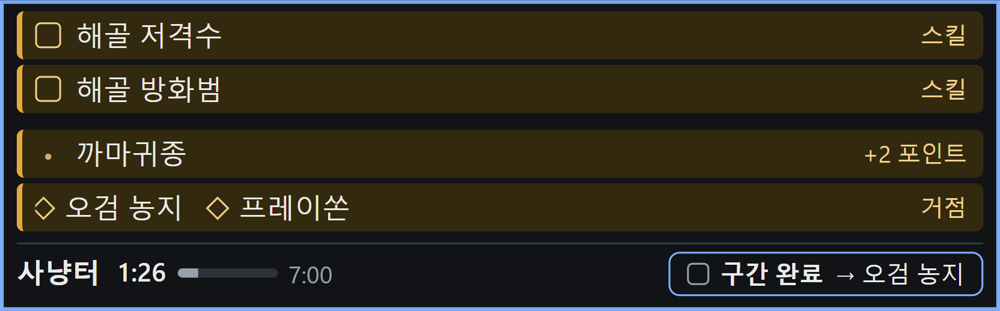
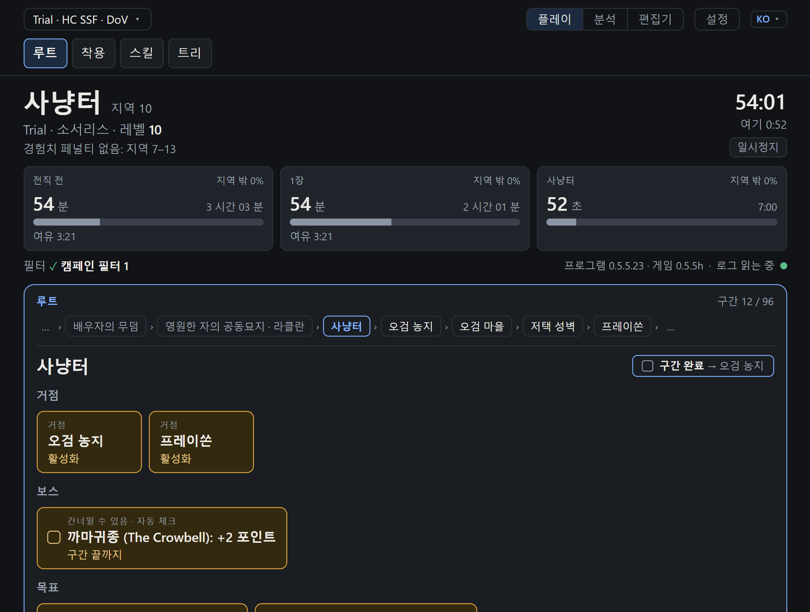
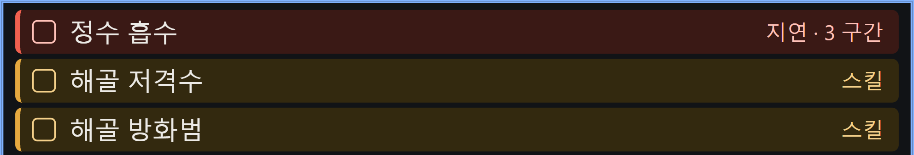
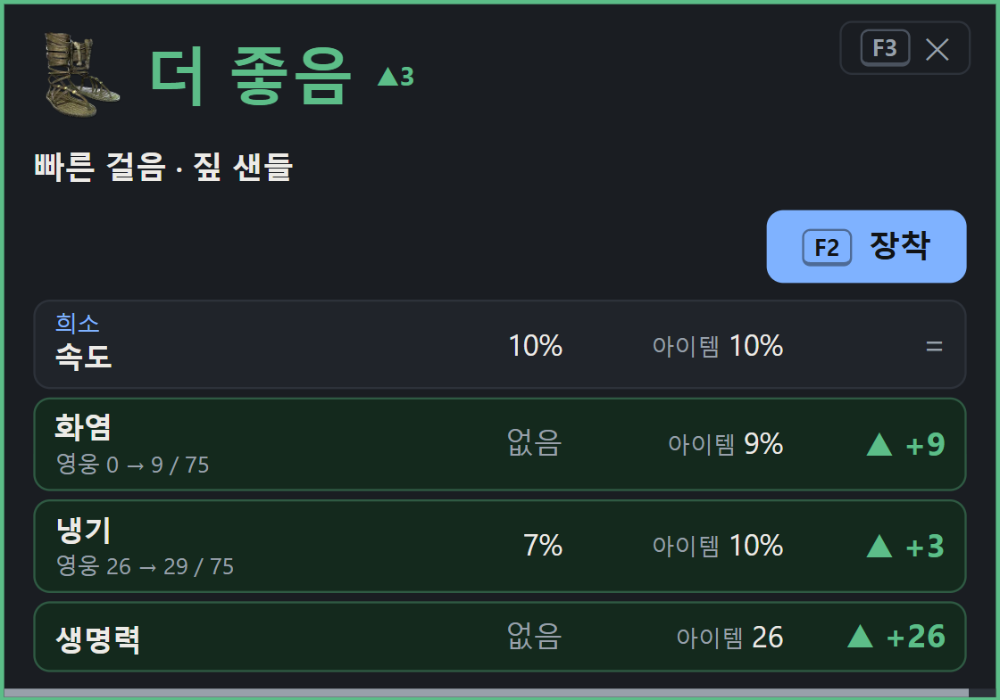
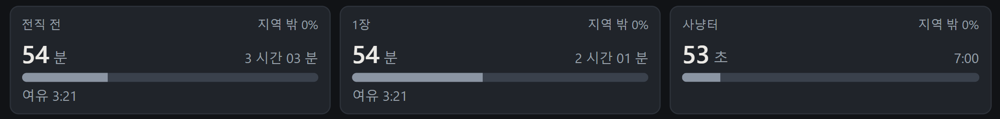
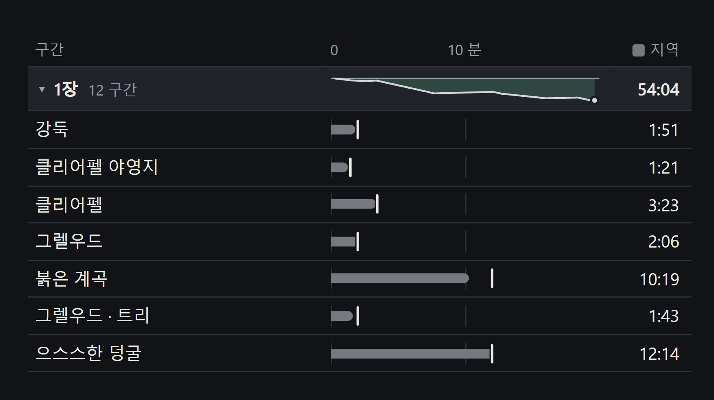
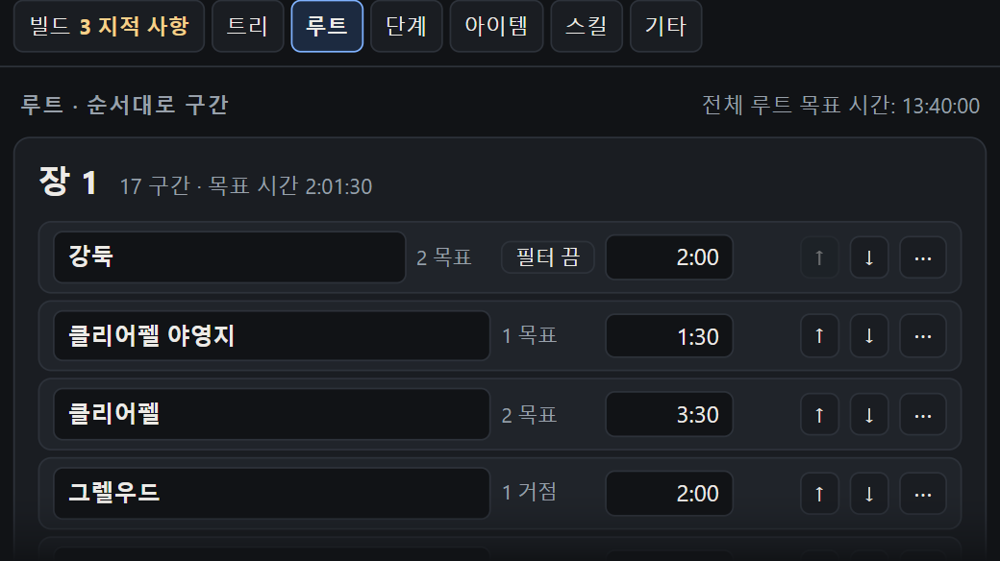

프로처럼 플레이하세요
수백 시간의 시행착오는 계획 제작자가 이미 대신 겪었습니다. Runbook은 그 계획대로 지역마다 갈 곳, 잡을 적, 챙길 것을 안내합니다.
첫 버전이 아직 공개되지 않았습니다

플레이만 하면 됩니다
지역에 들어서면 Runbook이 이미 그곳에서 할 일을 보여 주고 있습니다. 레벨, 보상, 트리 노드는 알아서 체크합니다.

빨간 줄은 사라지지 않습니다
계획 제작자는 어느 구간까지 무엇을 얻고 장착해야 하는지 알고 있습니다. 늦으면 그 줄이 빨갛게 변하고, 해낼 때까지 남습니다.

장착할까, 버릴까
아이템 위에서 F2를 누르면 착용 중인 아이템보다 좋은지 나쁜지 바로 보입니다. 기준은 계획 제작자가 고른 스탯입니다.

제작자의 페이스로
모든 구간과 장에는 계획에서 정한 시간이 있습니다. 어디서 여유가 있고 어디서 뒤처지는지 보입니다.

분석
1분 1초가 소중합니다
플레이가 끝나면 ‘분석’에서 시간을 어디에 썼는지 구간별로, 그리고 지역·마을·루트 밖으로 나누어 보여 줍니다. 이전 영웅과 비교해 보세요. 어디서 빨라졌는지 보입니다.


더 좋은 방법을 아시나요?
나만의 계획을 짜 보세요. 캠페인은 지역, 보스, 보상 하나하나까지 이미 짜여 있습니다. 빌드와 기한을 추가하세요.
궁금한 점
공략은 이미 있어요. Runbook이 왜 필요한가요?
공략은 읽고, 기억하고, 게임과 맞춰 봐야 합니다. Runbook은 플레이어와 함께 움직입니다. 지금 어느 지역에 있는지 알고, 지금 할 일을 보여 줍니다.
제 직업에 맞는 계획이 없어요. 어떻게 하죠?
계획은 제작자들이 공유하면 카탈로그에 올라옵니다. 그때까지는 직접 짤 수 있습니다. 캠페인은 이미 짜여 있어서 빌드만 추가하면 됩니다.
패치가 나왔어요. Runbook이 작동할까요?
패치가 나오면 Runbook도 새 버전이 필요합니다. 새 버전이 나오기 전까지는 게임이 더 최신이라고 프로그램이 알려 줍니다. 새 버전이 나오면 버튼 하나로 업데이트됩니다.
목록이 게임 위에 나타나지 않아요
게임이 ‘전체 화면’ 모드일 때 그렇습니다. 게임이 Runbook 창을 가리기 때문입니다. 게임 설정에서 ‘전체 창 모드’를 선택하면 목록이 나타납니다. 그래도 나타나지 않으면 Runbook의 ‘설정’에서 ‘게임 위 창’ 항목이 켜져 있는지 확인하세요.
Windows가 설치 프로그램 실행을 막아요
설치 프로그램에 아직 서명이 없어서 Windows가 게시자를 알지 못합니다. ‘추가 정보’를 누른 다음 ‘실행’을 누르세요. 실행 전에 파일을 확인하는 방법
필요한 기능이 없어요. 요청해도 되나요?
됩니다. 지금은 첫 버전이고 프로그램은 계속 발전할 것이며, 어떤 요청이든 받습니다. 무엇이 부족한지, 무엇이 제대로 작동하지 않는지 적어 보내 주세요. 제작자에게 문의하기 · GitHub 이슈